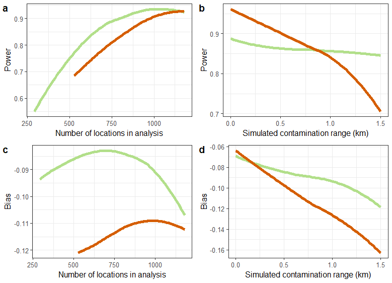

Use Case 8: Eggs - to fry or scramble?
Usecase8.RmdIn trials of malaria interventions, a ‘fried-egg’ design is often used to avoid the downward bias in the estimates of efficacy caused by contamination. This entails estimating the outcome only from the cores of the clusters. However, the intervention must also be introduced in the buffer zone, so the trial may be very expensive if there are high per capita intervention costs. Since the buffer zone is excluded from data collection, there are usually no data on whether the buffer is large enough to avoid contamination effects. A precautionary approach with large buffer zones is therefore the norm. However with ‘fried-eggs’ there are no data on the scale of the contamination, so if the effect was swamped by unexpectedly large contamination, this would be indistinguishable from failure of the intervention.
The alternative design is to sample in the buffer zones, accepting some degree of contamination. The data analysis might then be used to estimate the scale of contamination (see Use Case 5). The statistical model might be to adjust the estimate of effect size for the contamination effect, or to decide which contaminated areas to exclude post hoc from the definitive analysis (based on pre-defined criteria). This is expected to lead to some loss of power, compared to collecting the same amount of outcome data from the core area alone (though this might be compensated for by increasing data collection), but is likely to be less complicated to organise, allowing the trial to be carried out over a much smaller area, with far fewer locations needing to be randomized (see Use Case 4).
In this example, the effects of reducing the numbers of observations
on power and bias are evaluated in simulated datasets. To compare
‘fried-egg’ strategies with comparable designs that sample the whole
area, sets of locations are removed, either randomly from the whole
area, or systematically depending on the distance from the boundary
between arms. As in Use Case 7, spatially
homogeneous background disease rates are assigned, using
propensity <- 1, fixed values are used for the outcome
in the control arm, the target ICC of the simulations and the number of
clusters in each arm of the trial. Efficacy is also fixed at 0.4. The
contamination interval is sampled from a uniform(0, 1.5km)
distribution.
library(CRTspat)
# use the locations only from example dataset (as with Use Case 7)
example <- readdata("exampleCRT.txt")
trial <- example$trial[ , c("x","y", "denom")]
trial$propensity <- 1
CRT <- CRTsp(trial)
library(dplyr)
# specify:
# prevalence in the absence of intervention;
# anticipated ICC;
# clusters in each arm
outcome0 <- 0.4
ICC <- 0.05
k <- 25
# the number of trial simulations required (a small number, is used for testing, the plots are based on 1000)
nsimulations <- 2
theta_vec <- runif(nsimulations,0,1.5)
radii <- c(0, 0.1, 0.2, 0.3, 0.4, 0.5)
proportions <- c(0, 0.1, 0.2, 0.3, 0.4, 0.5)
scenarios <- data.frame(radius = c(radii, rep(0,6)),
proportion = c(rep(0,6), proportions))
set.seed(7)Two user functions are required:
- randomization and trial simulation
- analysis of each simulated trial with different sets of locations removed
analyseReducedCRT <- function(x, CRT) {
trial <- CRT$trial
radius <- x[["radius"]]
proportion <- x[["proportion"]]
cat(radius,proportion)
nlocations <- nrow(trial)
if (radius > 0) {
trial$num[abs(trial$nearestDiscord) < radius] <- NA
}
if (proportion > 0) {
# add random variation to proportion to avoid heaping
proportion <- proportion + runif(1, -0.05, 0.05)
trial$num <- ifelse(runif(nlocations,0,1) < proportion, NA, trial$num)
}
trial <- trial[!is.na(trial$num),]
resX <- CRTanalysis(trial,method = "LME4", cfunc = "X")
resZ <- CRTanalysis(trial,method = "LME4", cfunc = "Z")
LRchisq <- resZ$pt_ests$deviance - resX$pt_ests$deviance
significant <- ifelse(LRchisq > 3.84, 1, 0)
result <- list(radius = radius,
proportion = proportion,
observations = nrow(trial),
significant = significant,
effect_size = resX$pt_ests$effect_size)
return(result)
}
# randomization and trial simulation
randomize_simulate <- function(theta) {
ex <- specify_clusters(CRT, k = k, algo = "kmeans") %>%
randomizeCRT() %>%
simulateCRT(effect = 0.4, generateBaseline = FALSE, outcome0 = outcome0,
ICC_inp = ICC, theta_inp = theta,
matchedPair = FALSE, scale = "proportion", denominator = "denom", tol = 0.01)
# The results are collected in a data frame
sub_results_matrix <- apply(scenarios, MARGIN = 1, FUN = analyseReducedCRT, CRT = ex)
sub_results <- as.data.frame(do.call(rbind, lapply(sub_results_matrix, as.data.frame)))
sub_results$theta_inp <- theta
return(sub_results)
}Collect all the analysis results and plot. Note that some analyses result in warnings (because of problems computing some of the descriptive statistics when the number of observations in some clusters is very small)
results <- list(simulation = numeric(0),
radius = numeric(0),
proportion = numeric(0),
observations = numeric(0),
significant = numeric(0),
effect_size = numeric(0),
gamma = numeric(0))
simulation <- 0
for(theta in theta_vec){
simulation <- simulation + 1
sub_results <- randomize_simulate(theta)
sub_results$simulation <- simulation
results <- rbind(results,sub_results)
}##
## ===================== SIMULATION OF CLUSTER RANDOMISED TRIAL =================
## Estimating the smoothing required to achieve the target ICC of 0.05
##
## 0 00.1 00.2 00.3 00.4 00.5 00 00 0.10 0.20 0.30 0.40 0.5
## ===================== SIMULATION OF CLUSTER RANDOMISED TRIAL =================
## Estimating the smoothing required to achieve the target ICC of 0.05
##
## 0 00.1 00.2 00.3 00.4 00.5 00 00 0.10 0.20 0.30 0.40 0.5
results$fried <- ifelse(results$radius > 0, 'fried','scrambled')
results$bias <- results$effect_size - 0.5
library(ggplot2)
theme_set(theme_bw(base_size = 12))
fig8_1a <- ggplot(data = results, aes(x = observations, y = significant, color = factor(fried))) +
geom_smooth(size = 2, se = FALSE, show.legend = FALSE) +
scale_colour_manual(values = c("#b2df8a","#D55E00","#0072A7")) +
xlab('Number of locations in analysis') +
ylab('Power')
fig8_1b <- ggplot(data = results, aes(x = theta_inp, y = significant, color = factor(fried))) +
geom_smooth(size = 2, se = FALSE, show.legend = FALSE) +
scale_colour_manual(values = c("#b2df8a","#D55E00","#0072A7")) +
xlab('Simulated contamination range (km)') +
ylab('Power')
fig8_1c <- ggplot(data = results, aes(x = observations, y = bias, color = factor(fried))) +
geom_smooth(size = 2, se = FALSE, show.legend = FALSE) +
scale_colour_manual(values = c("#b2df8a","#D55E00","#0072A7")) +
xlab('Number of locations in analysis') +
ylab('Bias')
fig8_1d <- ggplot(data = results, aes(x = theta_inp, y = bias, color = factor(fried))) +
geom_smooth(size = 2, se = FALSE, show.legend = FALSE) +
scale_colour_manual(values = c("#b2df8a","#D55E00","#0072A7")) +
xlab('Simulated contamination range (km)') +
ylab('Bias')
library(cowplot)
plot_grid(fig8_1a, fig8_1b, fig8_1c, fig8_1d, labels = c('a', 'b', 'c', 'd'), label_size = 14, ncol = 2)Analysis
Figure 8.1. is are based on analysing 1000 simulated datasets (12,000 scenarios in all). The power is calculated as the proportion of significance tests with likelihood ratio p < 0.05.
The fried-egg design suffers little loss of power with exclusion of observations until the sample size is less than about 750 (the suggestion that there is a maximum at a sample size of about 900 locations is presumably an effect of the smoothing of the results). while the ‘scrambled’ egg trials lose power with each reduction in the number of observations (Figure 8.1a). Substantive loss of power is associated with contamination range of 1 km or more in this dataset. With
There is less absolute bias with the fried-egg designs but the effect is small except when the number of locations is very small (Figure 8.1c), or the simulated contamination range very large (Figure 8.1d).

Fig 8.1 Power and bias by number
of locations in analysis \(\color{purple}{\textbf{----}}\) : Randomly
sampled locations removed; \(\color{green}{\textbf{----}}\) : Fried-egg-
locations in boundary zone removed; \(\color{blue}{\textbf{----}}\) : Analyses
with no locations removed.